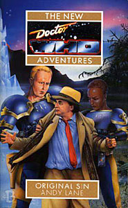

|
Original Sin
|
BASIC PLOT DOCTOR COMPANIONS MATERIALISATION CIRCUIT Pg 25 Level 301 of Spaceport Five Overcity. Pg 317 We appear to have arrived at Chris's parents' home. PREPARATORY READING CONTINUITY REFERENCES Pg 2 "She flinched at the harsh, amplified Oolian voice." The Doctor had mentioned going to Oolis at the end of Human Nature, so presumably this leads pretty much straight in. Pg 7 "Today's headlines: the Imperial Landsknechte should be scrapped, claims Duke Marmion, Lord Protector of the Solar System and its Environs, in an exclusive interview on this programme. And off-world: twenty-nine alien races file claims for reparation from the Imperial Court." The post of Lord Protector of the Solar System is clearly an earlier version of the Guardian of the Solar System that we see in The Daleks' Masterplan. We see the Imperial Court later on in this book, but the Doctor will actually visit it (and the story that begins here is concluded) in So Vile a Sin. Pg 8 "A couple were kissing over by an Arcturan sheckt bush." An Arcturan was seen in The Curse of Peladon, but we didn't see its bush. "Pilots belonging to the Order of Adjudicators were notoriously juvenile." The Adjudicators were first mentioned in Colony in Space and had a big presence in Lucifer Rising. Pg 9 "The swimming pool, the golf course, the rose garden, the art gallery..." We didn't see all of these in The Invasion of Time, but the idea is the same. Pg 10 "The outside was supposed to be infinitely reconfigurable - at least, it had been until the Doctor sabotaged the chameleon circuit." In No Future. "She smiled briefly at the memory of her short sabbatical at the archaeological dig on Menaxus." Theatre of War. Pg 17 "With only the minimum amount of paperwork between them and a position as a second-class subject of the Empress." We meet said Empress in So Vile a Sin. And the Doctor murders her. Pg 21 The TARDIS boot cupboard, with its wide horizons, is a glorious idea transferred into a series of gratuitous continuity references: "There were the elastic-sided pair inside which he had hidden the TARDIS key when he was in the Ashbridge Cottage Hospital. Next to them were the green rubber waders that he'd splashed about the marshes of Delta III in. Over to one side he saw the brogues that he'd been wearing when Kellman had electrified the floor of his room on Nerva Beacon." Spearhead from Space, The Power of Kroll, Revenge of the Cybermen. "The Doctor trailed off into silence. Mega. A word he had not thought about for some time." Because Ace left recently, in Set Piece. "He reached out and snared a pair of bright green shoes with orange spats." The Ultimate Foe. Pg 22 "No thanks! Your holidays are more dangerous than your deliberate adventures." A reference to an earlier sub-arc about wanting a holiday, most obvious in White Darkness, Shadowmind and Iceberg. "Did I ever tell you about the time I had a tooth removed in the Old West?" The Gunfighters. "What about the effervescent oceans of Florana?" Death to the Daleks. Pg 27 "Bernice noticed a number of off-worlders amid the throng - Arcturans, Alpha Centurans, Thrillp and Foamasi." The Curse of Peladon, The Curse of Peladon and The Monster of Peladon, unknown and The Leisure Hive. Pg 28 "The Wars of Acquisition only ended a few years ago, when the Sense-Sphere finally capitulated." The Sensorites, and it was mention in Planet of the Ood. "In her current form - one beppled to resemble a classical musician named Elvis Presley." A reference to The Chase, in which Vicki referred to The Beatles as classical musicians. Pg 37 "Performing rock 'n' roll classics or some of the more playable Martian and Earth Reptile pieces." The Ice Warriors et al, Doctor Who and the Silurians et al. Pg 39 "Sat up with on occasion, drinking voxnik they'd stolen." A drink imbibed by the Doctor during Slipback, more's the pity. Pg 51 "The rope ladder was suspended in nothingness." This is probably a long shot, but given how many ideas are borrowed from The Invasion in this story, the presence of a rope ladder is probably slightly more than coincidental. Pg 59 "You may find this difficult to believe, but I am over a thousand years old." We learn later (in SLEEPY) that the Doctor spent his one thousandth birthday in the ship in Set Piece. This dramatically contradicts everything he says about his age in the new series. Pg 65 "The Doctor shrugged. 'Well,' he said hesitantly, 'there's the HADS.'" He goes onto explain that this is the Hostile Action Displacement System, as first seen in The Krotons. Pg 66 "No, although I once met a ghastly Kroll." At the end of an appallingly bad conversation which references Kennedy's assassination (and therefore Who Killed Kennedy and Rose), we get a fleeting and irrelevant reference to The Power of Kroll. Pg 78 Reference to Daleks. Pg 80 The Master, apparently "frequently used regeneration as a means of disguise." No wonder he used up his bodies so damn quickly. And with all his access to rubber faces as well. "My friend Romana - you remember her? - did a similar thing during her first regeneration: trying out various genetic configurations before she settled on one." Destiny of the Daleks, and Benny met Romana in Blood Harvest. Pg 82 "Olias stood atop an island of stone in the centre of the square, flanked by four metal statues and seven brutal Ogron bodyguards." From The Day of the Daleks. Pg 83 "It was old Doc Dantalion: the arachnid Birastrop." They were mentioned in The Brain of Morbius, and the Doctor actually met Dantalion in Decalog 2: Where The Heart Is. Pg 91 "At least Daleks and Cybermen had emotions you could play on, although both races would have denied it emphatically, had they been asked." A neat reference to Cybermen actually having emotions despite all that they have ever said. Pg 92 Reference to the Brigadier. "'Who is the prisoner?' he asked, glad that Ben and Polly weren't there." This is a slightly obscure reference to the fact that, in The War Machines, WOTAN referred to him as 'Doctor Who'. It's clearly a question hidden in plain sight. Pg 98 "It had almost happened during the Lucifer crisis." Lucifer Rising. Pg 107 A brief reference to Draconians, from Frontier in Space. Pg 125 "Fresh outbreaks of fighting on Allis Five, Heaven, Murtaugh and Riggs Alpha." Not sure about the rest, but we saw the second in Love and War, and it's thus implied that it's been recolonised. Pg 127 "Her first taste of the real world that her family's riches had managed to shield her from for all those years." The idea that Roz's family were stupidly rich would be fully explored in Decalog 4, but is also relevant in So Vile a Sin. "After two years training on Ponten IV." Mentioned in Lucifer Rising. Pg 146 Reference to Daleks. Pg 163 Another reference to Heaven, from Love and War. Pg 164 Reference to the Doctor being known as Theta Sigma, from The Armageddon Factor. "It probably had something to do with the Time Lords mucking about in his mind before they regenerated him and exiled him to Earth." The War Games. Pg 165 "They had assured him after that Omega business that they had repaired all the damage." The Three Doctors. Pgs 179-180 "As an archaeological side visit on Earth back in the 1970s, while the Doctor had been trying to prevent the Vardan invasion." No Future. Reference to Ace. Pg 184 "A riddle wrapped in a mystery inside an enigma. The Doctor scratched his head. Now who had he said that to originally, and what about?" The answer to that question is that Winston Churchill said it about the Russians. If I were Churchill, I'd be becoming increasingly pissed off that all my famous phrases had apparently been uttered by the Doctor beforehand. Pg 185 "He remembered a cave on Metebelis Three, and the way the radiation had sleeted through his body like rain through muslin." Planet of the Spiders. References to the APC, the CIA and various other bits of dull Gallifreyan lore from The Deadly Assassin, The Invisible Enemy and The Invasion of Time. Pg 186 "A dark figure rose up before him in his thoughts: burning eyes raking him from beneath a black skull-cap." It's the Valeyard, from The Trial of a Time Lord, because any reference to Gallifrey in the NAs wouldn't be complete without him popping up as well. Pg 187 "Hanging onto Morbius's mind-bending equipment while his past lives were dragged from him, one by one... Letting the Zygons' bistronic radiation short-circuit through his body... Lysing, squirming, while Davros's mind probe ripped his memory to shreds... Screaming soundlessly as Abaddon's tiny thought parasites worked their way through his neuronic pathways, burning as they went..." The Brain of Morbius, Terror of the Zygons, Genesis of the Daleks (kind of, since that's not exactly accurate) and, finally... well, this is impressive. Abaddon was the villain in Torchwood's series one finale, End of Days, as well as being involved in Craig Hinton's alternate end to the sixth Doctor, Time's Champion, neither of which had been written at this point. Pg 193 Reference to the White Guardian, from The Ribos Operation and Enlightenment, amongst others. Pg 194 "Do I have the right?" Genesis of the Daleks. Pg 200 Another brief reference to Ace. Pg 212 "Daleks, Sess, Scumble, Drahvins, Falardi." The name rings a bell, unknown, a type of cider in Terry Pratchett books, Galaxy Four, aliens who allegedly killed Roz's old partner but actually didn't. Pg 216 "An expensive five-piece shrivenzale-skin suit." Perhaps one of the silliest continuity references in the book (and that's pretty stiff competition, to be honest), to The Ribos Operation. Pg 218 Another brief reference to Draconians. Pg 222 "Reel us in with a gravity beam like a gumblejack on the end of a piece of twine." The Two Doctors. Pg 234 "The Draconians, the Daleks, the Usurians, the Ook. Even the Cimliss." Frontier in Space, The Daleks et al, The Sunmakers, possibly another reference to Terry Pratchett but more likely a misprint of 'Okk' from Lucifer Rising, and the Doctor once carried Cimliss money, in All-Consuming Fire. Pg 235 "The Fourteenth Resolution of the Armageddon Convention clearly states -" The Empire of Glass. Pg 237 Another reference to Alpha Centuari from the Peladon stories. Pg 246 "Interstellar Nanoatomic ITEC. Something about that name caused a shiver to run up his spine." It later transpires that it's an anagram of International Electromatics, from The Invasion. Hence the shiver. Tobias Vaughn has spent a thousand years perfecting an anagram. Gosh. Pg 247 "Generations had lived and died without realizing that she [the Empress] was centcomp." This would be picked up and run with in So Vile a Sin. Pg 249 "Was it Dravidian design? Shlangiian? Antonine?" Presumably a mis-spelling of Drahvidian from Galaxy Four, as opposed to the speakers of the Dravidian language, who currently mostly live in South India. Shlangiians (yes, with the double i) are unknown, although it should be noted that 'schlange' is a euphemism for 'penis' in German. Antonines are also unknown, although you may be interested to know that Peter Capaldi's first theatre group, which he joined at the age of 15, were the Antonine players. Pg 252 "The Icaran ring kept them circulating inside a magnetic Klein bottle." Readers of the EDAs will view this phrase with horror. See (or don't) The Ancestor Cell. Pg 258 Yet another reference to Heaven from Love and War. It's almost like the rest of the Future History cycle didn't happen. Pg 259 Another reference to Daleks. Pg 260 "Now Florana was a dumping ground for the waste products of thirty-six races, Metebelis was a desert wasteland." Death to the Daleks, Planet of the Spiders and how very depressing. Pg 269 "The Interstellar Nanoatomic ITEC - that was an unforgivably obvious clue, a real cock pheasant of a clue, as Holmes would have said." All-Consuming Fire. Pg 270 "Interstellar Nanoatomic ITEC. An obvious anagram of International Electromatics." From The Invasion. The most horrifying thing about this is that Lane has found his anagram, found that there are four leftover letters and substituted an acronym to make it work. Pg 274 "Filing away for the moment the fact that Vaughn knew about his regenerative ability. How had he found that out? From the Cybermen perhaps?" A possible implication of what the Cybermen knew in Silver Nemesis. Or perhaps not. Pg 275 "The Doctor hadn't bothered looking for Vaughn's body after the battle had ended, and before long he and his companions had moved on to the Collection and that nasty business with the Bookworms." The wake of The Invasion and an unrecorded adventure, possibly involving Braxiatel and his Collection, first mentioned in City of Death and seen in Theatre of War. There follows a massive flashback to The Invasion. Pg 286 "I believed that my alliance with the Cybermen could bring great benefits for the Earth." The Invasion and seriously?!? Pg 287 "Safe from Daleks, Jullatii, Cybermen, Draconians, Chelonians, Ice Warriors, Sess, Kraals, Nestenes, Greld, Zygons." Deep breath. The Daleks et al, The Empire of Glass, The Tenth Planet et al, Frontier in Space, The Highest Science et al, The Ice Warriors et al, uncertain, The Seeds of Doom, Spearhead from Space et al, The Empire of Glass and The Quantum Archangel, Terror of the Zygons. And see Continuity Cock-Ups. "And who do you think designed the glitterguns that won the Second Cyberwar?" Revenge of the Cybermen. Pg 288 "You examined my micromonolithic circuits, Doctor. You know how easily they could have been modified to kill people, rather than render them unconscious." The Invasion. And see Continuity Cock-Ups. Pg 289 "Do you remember the Biomorphic Organizational Systems Supervisor, Doctor? I built BOSS, although, looking back, I see that it was a mistake. And Professor Kettlewell - remember him? I funded Think Tank's work into robotics so that they could build a body for me." The Green Death, Robot and this is the point at which the whole thing starts getting very silly, with Vaughn responsible for everything in the entire history of Doctor Who. You almost expect him to add "And the Celestial Toymaker? Remember him? I funded his Masters Degree." "I have ransacked the bodies of Cybermen left behind in the snows of the south pole, the rotting brickwork of London's sewers, the sterile surface of the moon and the metal corridors of Space Station W3." The Tenth Planet and Iceberg, The Invasion and Attack of the Cybermen, The Moonbase, The Wheel in Space. Pg 290 "'Isomorphic controls,' the Doctor murmured." Pyramids of Mars. Pg 291 Brief mention of Zoe. Pg 292 "'The Daleks have time travel, I know that,' he said, scowling. 'I saw their time ship at the 1995 Earth Fair in Ghana, but it left before I could capture it. Cybermen from the future came back in time to the sewers of London." The Chase, Attack of the Cybermen. "... and even those moronic Sontarans can travel through time, albeit in a crude fashion. Despite all my best attempts, despite my financial support of Whittaker, Blinovitch and the rest, I have not been able to get hold of a workable time machine." It really is getting irritating now. Sontarans had crude time travel in The Time Warrior, and wanted to make it less crude in The Two Doctors. Whittaker is the mad scientist from Invasion of the Dinosaurs, whilst Blinovitch is first mentioned in Day of the Daleks and has been used a catch-all excuse for messing around with time by practically every author of every Doctor Who book ever. Pg 293 "I am time's champion." Oh, shut up. "He bit his tongue, thinking about The Crystal Bucephalus." The Crystal Bucephalus, shockingly enough. Pg 297 "The years he had spent on Pella Satyrnis during his fifth incarnation." The Crystal Bucephalus again. Pg 300 "The controls were isomorphic, but only when he bothered setting them up that way." That's a nice ret-con, explaining why what the Doctor said in Pyramids of Mars hasn't appeared to be consistently true. Pg 304 "Some fat old man who smoked cigars." Winston Churchill, from Players and Victory of the Daleks. Pg 306 "'You've waited this long,' the Doctor snapped, slipping his shoe off and upending it. 'Impatience doesn't suit you.' The key dropped into his palm." Spearhead from Space. "I am not unaware of the trick you pulled on Planet 14." We all are, since we've never seen it, but it was mentioned in The Invasion. Pg 307 "As I recall, they [the Cybermen] once stole one [a time ship] from us." Attack of the Cybermen. Pg 311 "Vaughn's overweening arrogance would lead him to examine the console, sure that he could decipher its operation. Which he probably could. After all, if Tegan could do it, anybody could." Four to Doomsday. Pg 318 "Meanwhile, news just in from the planet Solos..." The Mutants. OLD FRIENDS AND OLD ENEMIES NEW FRIENDS AND NEW ENEMIES Someone disguised as Provost-Major Montmorency Beltempest, but who isn't actually him at all, although he's had a partial mindwipe, so he thinks he is Beltempest, but actually knows he isn't. Please join in with me as I say 'What?' Nor is it ever explained who he actually is, which is annoying. Whoever he is, he reappears in Happy Endings.
CONTINUITY COCK-UPS PLUGGING THE HOLES [Fan-wank theorizing of how to fix continuity cock-ups] FEATURED ALIEN RACES Oolians, which are bird-like and reminiscent of a dodo, although these ones can fly. Animeats, vast animals who don't need most of their body fat, so it is regularly harvested. They are fed on sewage. Nice. We think there may be a metaphor going on here, but we're not sure. A ditz is a Centauran animal, like a bee, but the size of a poodle. People keep them as pets. Sunhillowans, whose body chemistry is based upon Germanium. They glitter constantly. Doctor Dantalian is an arachnid Birastrop. Gorekians have three glowing eyes. Landsknechte uniforms are bioengineered from an arthropod found on a moon of Threllinium Omega. Even the uniforms are aliens. We get glimpses of Alpha Centuarans, Arcturans, Thrillp, Foamasi and Ogrons. FEATURED LOCATIONS Pg 1 Oolis Pg 7 The Central Adjudication Lodge in the Overcity Pg 9 Spaceport Five Undertown Pg 24 Spaceport Five Overcity Pg 50 The Imperial Court orbits Saturn. Pg 68 The Imperial Landsknechte ship Arachnae. Which means 'Spiders', for no apparent reason. Pg 68 In orbit around Purgatory. Pg 70 The planet Purgatory, laid out like a Dungeons and Dragons wilderness map, in hexagons of different terrain laid next to each other. A training ground for the Imperial Landsknechte, the local marines. Pg 82 It's still in the Undertown, but it's also blatantly Trafalgar Square. Pg 93 In orbit above Earth, on the Vigilant IX orbital laser satellite. Pg 165 The planet Dis, orbiting inside the photosphere of a sun. Pg 183 The good ship Moorglade. Pg 208 Dantalion's lair is in St James Garlickhythe Church, which exists today. Pg 221 Inside the Hith ship, Skel'Ske. Pg 247 The Imperial Throne Room, orbiting Saturn. IN SUMMARY - Anthony Wilson |
|
 |